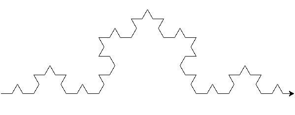
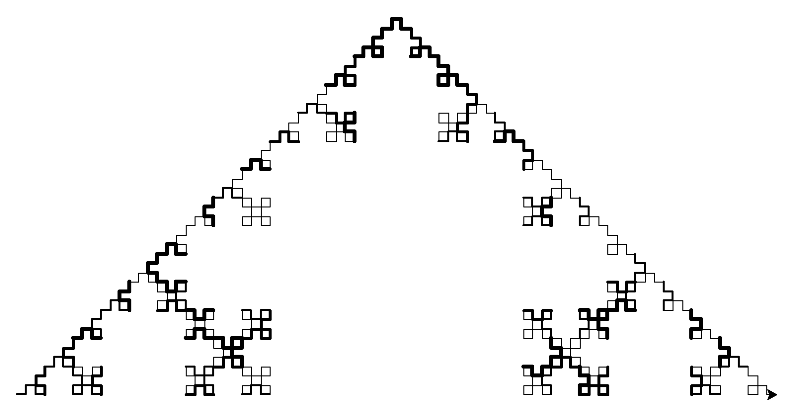
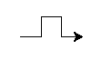

draw_koch(t,4,25)

This is the basic Koch curve. At depth 2, it consists of a straight line, two lines that meet at a 60-degree angle, and another straight line.
koch_2(t,5,30)

My modified Koch curve. It consists of 4 segments instead of 5, and segments meet at 90-degree angles instead of 60-degree ones. The width also varies randomly with depth, and the size decreases as the depth increases.
The modified Koch curve at depth 2.
def koch_2(t,depth,length): if depth==1: t.fd(length) elif depth>1: t.width(random.randrange(5)) koch_2(t,depth-1,length*0.75) t.lt(90) koch_2(t,depth-1,length*0.75) t.rt(90) koch_2(t,depth-1,length*0.75) t.rt(90) koch_2(t,depth-1,length*0.75) t.lt(90) koch_2(t,depth-1,length*0.75)